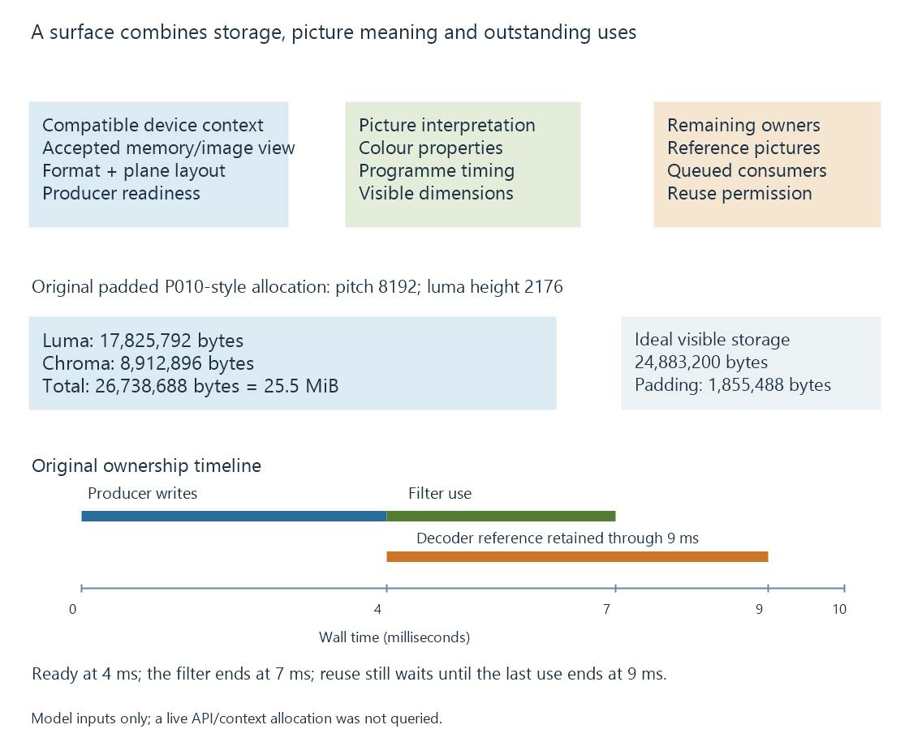

Hardware frame surfaces and GPU contexts
A hardware frame surface represents picture storage within a device/context relationship, with layout, timing, ownership and completion determining how another stage may use it.
A hardware frame surface represents picture storage associated with a particular media device/context. It is more than a codec name or a width/height pair.
The next stage needs a valid way to access the actual picture and preserve its interpretation, timing and lifetime.
A frame has several relationships

| Relationship | What the consumer needs |
|---|---|
| Device/context | A compatible route to the selected storage |
| Pixel representation | Format, planes, dimensions and row layout |
| Picture interpretation | Colour range, matrix, transfer function and primaries |
| Programme timing | Intended presentation/decode context |
| Readiness | Relevant producer completion |
| Ownership | Remaining references and consumers |
A frame handle meaningful to one context is not automatically a usable input in an unrelated context. Another adapter or interface may need a supported import, transfer or newly prepared resource.
Coded storage can exceed the visible picture
Consider an original P010-style 4:2:0 layout for a visible 3840 × 2160 picture. Samples use sixteen-bit storage, the declared pitch is 8192 bytes, and the padded storage height is 2176.
The luma and chroma planes have this declared geometry:
Luma = 8192 × 2176 = 17,825,792 bytes
Chroma = 8192 × 1088 = 8,912,896 bytes
Total 26,738,688 bytes
The ideal unpadded geometry would occupy 24,883,200 bytes. The example's row and height padding add 1,855,488 bytes.
This is a declared linear layout model. It is not a formula for every tiled, compressed or driver-specific surface.
The visible width identifies picture samples to present. Pitch identifies how storage rows are addressed. A consumer using one as the other can misread the picture even when its codec and visible dimensions are correct.
Sample precision is not allocation width
A ten-bit sample can occupy sixteen bits of storage. The unused storage bits do not become additional source-image precision.
Changing a surface format can therefore change memory demand without creating more image information. An intermediate four-channel float representation has another storage cost again.
The accepted formats must fit both sides of a handoff. A processor offering BGRA does not automatically satisfy an encoder that accepts only the selected NV12 configuration.
Readiness and release occur at different times
Use an original picture A timeline:
| Event | Model time | Established relationship |
|---|---|---|
| Decoder finishes writing A | 4 ms | The relevant result can become ready to read |
| Filter finishes its A use | 7 ms | That filter use can end |
| Decoder finishes the last declared dependent-picture use | 9 ms | That decoding-reference use can end |
If no other uses remain, nine milliseconds is the model's earliest reuse point. Reusing at seven would overlook the reference use.
These are invented times. They make the two kinds of retention visible: a downstream consumer and a future decode dependency can both keep a surface live.
A pool coordinates several pictures
The producer needs available storage for new results while other surfaces remain retained. A filled pool can delay submission even when the hardware operation itself is fast.
An API can return a mapped or reference-counted object, but the application still follows its relevant completion and release contract. A reference count preventing deallocation does not by itself say the last write is finished.
At a format or device-context change, the application establishes a compatible new resource arrangement. Old handles and strides retain their old context rather than becoming valid merely because the next picture has the same title.
See Also
- Zero-copy video pipelines and the boundary being avoided
- Copy-back video pipelines
- GPU memory limits in video processing
- DRM PRIME and DMA-BUF frame sharing
- The hardware decode-filter-encode pipeline
- Mixed hardware and software filtering